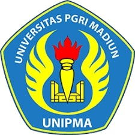

Universitas PGRI Madiun (UNIPMA) adalah salah satu perguruan tinggi swasta terkemuka di Jawa Timur yang berfokus pada pengembangan pendidikan dan teknologi. Kampus ini dikenal dengan suasana akademik yang aktif dan inovatif.
Mahasiswa di UNIPMA berasal dari berbagai daerah di Indonesia, dan didukung oleh tenaga pengajar profesional yang berpengalaman di bidangnya.
Untuk informasi lebih lengkap, kunjungi situs resmi Universitas PGRI Madiun.

| Fakultas | Program Studi | Akreditasi |
| FIP | Pendidikan Guru SD | A |
| FTIK | Teknik Informatika | B |
| FBS | Pendidikan Bahasa Inggris | A |
| FIK | Pendidikan Jasmani | B |